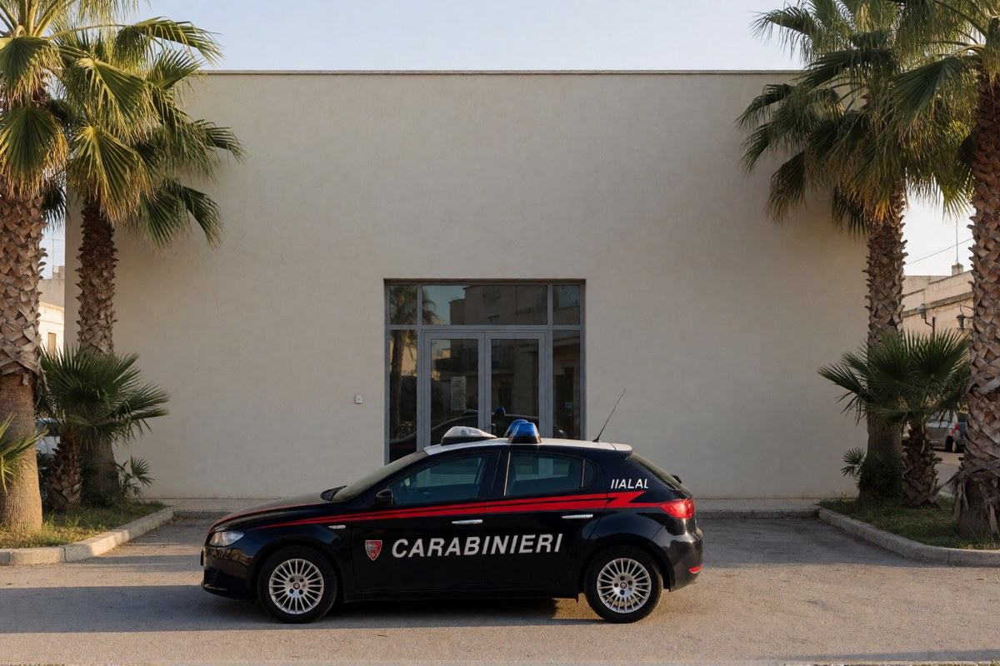

Sicilia · 18 novembre 2026
Morte di Noemi a Riposto, l'unico indagato interrogato in Procura

Tony Proietto, 46 anni, è stato ascoltato dai magistrati di Catania tre mesi dopo la morte di Noemi Impellizzeri. Prima di entrare ha detto di non avere idea di chi possa averla uccisa.
di Franco Zanghì
Tony Proietto, l'unico indagato per la morte di Noemi Impellizzeri, è stato interrogato mercoledì 18 novembre. Ha 46 anni, è indagato per omicidio, ed è arrivato al comando provinciale dei carabinieri di Catania con il suo avvocato per essere ascoltato dalla sostituta procuratrice che guida l'inchiesta. Prima di entrare ha parlato con i giornalisti: «Non ho idea di chi possa averla uccisa».
Noemi Impellizzeri aveva 33 anni. È stata trovata impiccata nel suo appartamento il 23 agosto, a Riposto, in provincia di Catania, sulla costa ionica accanto a Giarre.
Che cosa ha detto l'indagato
«Non ho nessuna preoccupazione, andrò a dire ai magistrati solo quello che so», ha dichiarato Proietto all'arrivo. E ancora: «Noemi era una persona gentile. Ho solo il rimorso di non averla raggiunta la sera della telefonata». Sui propri sospetti è rimasto vago: «Dentro di me ho dei dubbi, ma non riesco ad avere un'idea precisa. Voglio solo che venga fuori subito la verità».
È il punto che le indagini devono stabilire, e le strade sono due. La prima: Noemi si è tolta la vita, come lei stessa avrebbe detto a Proietto in una videochiamata. La seconda: è stata uccisa, e chi l'ha uccisa ha messo in scena un finto suicidio. Dalla fine di agosto i rilievi sono andati avanti su più fronti, dall'appartamento di Riposto ai dispositivi elettronici sequestrati, con accertamenti irripetibili disposti dalla Procura e il lavoro dei reparti scientifici dei carabinieri.
È il punto che le indagini devono stabilire, e le strade sono due. La prima: Noemi si è tolta la vita, come lei stessa avrebbe detto a Proietto in una videochiamata. La seconda: è stata uccisa, e chi l'ha uccisa ha messo in scena un finto suicidio. Dalla fine di agosto i rilievi sono andati avanti su più fronti, dall'appartamento ai dispositivi elettronici.
Proietto ha sempre respinto le accuse e ha sempre sostenuto che fra lui e Noemi ci fosse soltanto un rapporto di amicizia. Per lui vale la presunzione d'innocenza fino alla sentenza definitiva: è indagato, non imputato, e l'inchiesta è nella fase delle indagini preliminari.
Il punto
Tre mesi dopo la morte di Noemi, l'unico indagato è stato interrogato e dice di non sapere chi l'abbia uccisa. Resta una famiglia che aspetta di sapere come è morta una donna di 33 anni, e un fascicolo che tiene aperte due ipotesi opposte. Non sono i verbali di una giornata a chiudere una storia così: saranno gli accertamenti tecnici e, se si arriverà a un processo, i giudici.
Fonti
- ANSA, l'interrogatorio di Tony Proietto al comando provinciale dei carabinieri di Catania, 18 novembre 2026
- Open, Tony Proietto unico indagato per la morte di Noemi Impellizzeri, 16 settembre 2026
- Quotidiano Nazionale, le dichiarazioni dell'indagato sul rapporto con la vittima, 27 agosto 2026
Indagine in corso alla data di pubblicazione: l'ipotesi del suicidio e quella dell'omicidio erano entrambe aperte.